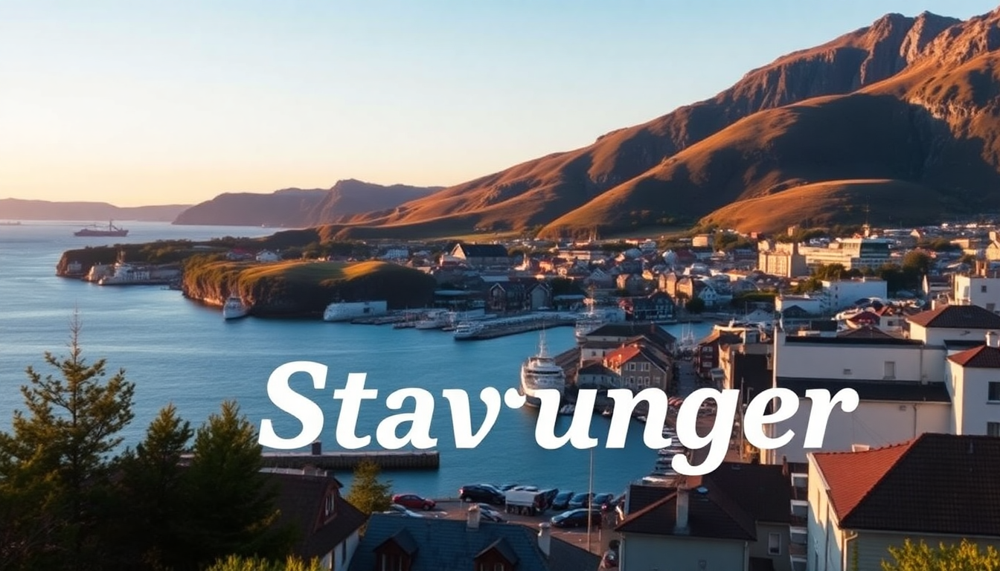

Where to Stay in Stavanger: Best Areas for Every Budget

I landed in Stavanger on a grey Tuesday morning, jet-lagged but buzzing. The city is smaller than I expected—walkable, salty with sea air, and surrounded by fjords that punch above their weight. After three trips and a dozen beds slept in, I’ve got a clear picture of where you should actually stay, depending on what you want to spend and do. Here’s the no-fluff breakdown.
Which Neighborhood Is Best for First-Time Visitors?
For your first trip, you want to be in Gamle Stavanger (Old Town) or the city center. It’s compact, cobblestoned, and everything worth seeing is within a ten-minute walk.
- Gamle Stavanger is the postcard district: white wooden houses, flower boxes, narrow lanes. It’s quiet at night but dead after 6pm for food.
- City Center (around Østervåg and the main square) puts you close to restaurants, bars, and the cathedral. We stayed at Comfort Hotel Square, which was basic but perfectly located—right on the main pedestrian street.
- Victoria Hotel (a step up) gave us a harbor-view room. It’s pricier, but you wake up looking at the boats and the Norwegian Petroleum Museum across the water.
If you’re only in town for one or two nights to do the Pulpit Rock hike, pay the premium to stay central. You don’t want to waste time commuting.
Where Should Budget Travelers Stay in Stavanger?
Stavanger isn’t cheap—Norway never is—but there are ways to keep the room cost under 1200 NOK per night.
- Stavanger Bed & Breakfast is a hostel-style spot near the train station. Private rooms exist, but the dorms are the real deal. Clean, quiet, and includes a basic breakfast. I slept better there than in some hotels.
- Vandrerhjemmet Stavanger (the youth hostel) sits a 15-minute walk from the center. It’s more of a social vibe, with a shared kitchen. If you’re solo or on a tight loop, this is the play.
- Airbnb in Eiganes (the residential area just west of the center) can be cheaper than hotels. I rented a basement studio for 900 NOK a night. It had a mini-fridge and a coffee maker—enough.
Skip the central hotels if you’re on a strict budget. Even the “budget” chains like Thon hover around 1500 NOK. Walk 10 minutes out, and prices drop by a third.
What’s the Best Area for Families or Longer Stays?
If you’re staying three nights or more, or traveling with kids, look at Eiganes or Våland. These are quiet, green neighborhoods with playgrounds and grocery stores, but still close enough to walk downtown.
- Eiganes has wide streets and big houses. We stayed at Clarion Collection Hotel Skagen Brygge on the edge of this area—it’s a bit corporate, but they include an evening meal in the rate, which saved us a fortune on dinner.
- Våland is hillier and more local. There’s a park called Vålandstårnet with a tower you can climb for free—great for kids to burn energy.
- Mosvangen Park has a public swimming area in summer. If you’re renting a car, this side of town has easier parking than the center.
For longer stays, consider an apartment rental through Booking or Finn.no (the local site). We found a two-bedroom near Kannik for 2000 NOK a night—half what a hotel would charge, with a full kitchen.
Which Area Is Best for Nightlife and Restaurants?
Stavanger’s nightlife clusters around Fargegaten (the “Color Street” in the center) and the harbor area near Skagen. This is where locals go after work, and it’s where you’ll find the best food.
- Fargegaten is a row of brightly painted wooden houses turned into bars and restaurants. Bøker og Børst is a pub with a huge beer list and a chill crowd. Sjøhuset Skagen is the touristy seafood spot—overpriced, but the fish soup is legit.
- Torget (the main square) has Olivia for pizza and Renaa for fine dining. Renaa is expensive (600 NOK for a main), but the tasting menu is worth it if you’re celebrating.
- For something casual, Egon on the harbor does decent burgers and has a rooftop terrace in summer. It’s a chain, but the view of the boats is hard to beat.
If you want to avoid drunk crowds on a Friday night, skip the bars on Kongsgata. Stick to Fargegaten or the quieter spots around Valberget park.
Is It Worth Staying Outside the City Center?
Yes, but only if you have a car or don’t mind a 20-minute bus ride. The outer neighborhoods are cheaper and quieter, and you get more space.
- Madla is a suburb southwest of the center. It’s residential, with a shopping center (Madla Senter) and good bus connections. We stayed at a Scandic there once—nothing special, but it was half the price of the city-center hotels.
- Hillevåg is closer to the water, with a few small beaches. It’s a 10-minute bus ride to the center. I’d only recommend it if you’re doing the Pulpit Rock hike and want to avoid the morning traffic jam from the city.
- Sandnes is technically a separate town, but it’s a 15-minute train ride from Stavanger. Hotels there are significantly cheaper, and the train runs every 20 minutes. We did this for a week—saved about 3000 NOK total.
The trade-off: you lose the ability to stumble home after a late dinner. Buses stop running around midnight, and taxis are brutal (400 NOK for a 10-minute ride).
What About Accommodation Near the Cruise Port?
If you’re coming off a cruise or taking the Fjord Line ferry, stay near Stavanger Cruise Port or Risavika. The port area itself is industrial, but the hotels right there are convenient.
- Clarion Hotel Stavanger is literally across the street from the cruise terminal. It’s modern, with a good breakfast, but it feels like an airport hotel.
- Thon Hotel Maritim is a 5-minute walk from the port. We used it for an early-morning ferry departure—the room was small but clean, and we could see the ship from the window.
- Risavika is 15 minutes south by taxi. It’s a ferry terminal, not a neighborhood. Only stay there if you’re catching the Kystbussen bus or the Fjordline early.
Don’t pay extra for a “harbor view” here. The view is mostly cranes and shipping containers.
FAQ
What is the cheapest time of year to visit Stavanger? Late autumn (October–November) and early spring (March–April) have the lowest hotel rates. Avoid summer (June–August) when prices double, and cruise ships flood the city. We went in mid-September and paid 800 NOK for a double room at the youth hostel—half the July price.
How do I get from Stavanger Airport to the city center? Take the Flybussen airport bus (120 NOK, 25 minutes) or the local bus number 42 (cheaper but slower). Taxis are about 400 NOK. There’s no train. The bus drops you at the central station, right next to the main hotels.
Is Stavanger safe for solo travelers? Yes. I walked alone at midnight from Fargegaten back to Eiganes and felt fine. The only risk is drunk people on weekend nights near Kongsgata. Keep your wits about you, but this isn’t a high-crime city. Solo women I met said they felt safe everywhere except the dark alleys off the main square.
Conclusion
- Stay in Gamle Stavanger or the City Center for your first visit—walkability is everything.
- Budget travelers should go for Stavanger Bed & Breakfast or a rental in Eiganes.
- Families and longer stays work best in Våland or Madla for space and lower prices.
- Nightlife and food are concentrated in Fargegaten and Skagen—skip the tourist traps on the main square.
- For cruise or ferry connections, Clarion Hotel Stavanger is the only practical choice near the port.